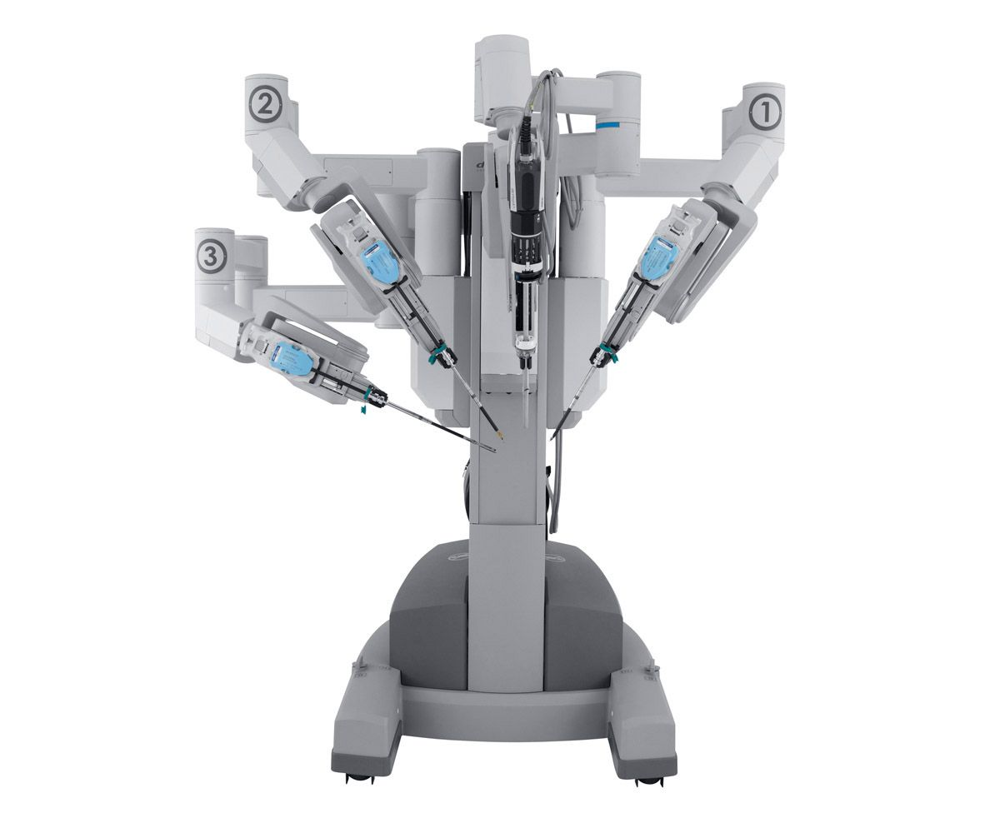

Da Vinci Surgical Robot
The Da Vinci Surgical System is a state-of-the-art robotic platform that enhances a surgeon’s ability to perform complex procedures with precision. It’s not an independent robot but a tool controlled by a highly skilled surgeon.
The system includes robotic arms attached to surgical instruments. A surgeon sits at a console and controls these arms, which can rotate and move in ways that human hands cannot. A 3D camera provides a high-definition view of the surgical site, magnifying it significantly.
Benefit:
- Minimally Invasive Procedures: Small incisions mean less pain for the patient, shorter recovery time, and reduced risk of infection.
- Enhanced Control: The robotic arms filter out hand tremors, allowing for steady and accurate movements.
- Improved Access: The robot can reach areas of the body that might be challenging to operate on with traditional techniques.
Real-Life Uses
- Cancer surgeries, such as prostate or kidney cancer removal.
- Heart valve repair.
- Treating gynecological conditions like endometriosis.
